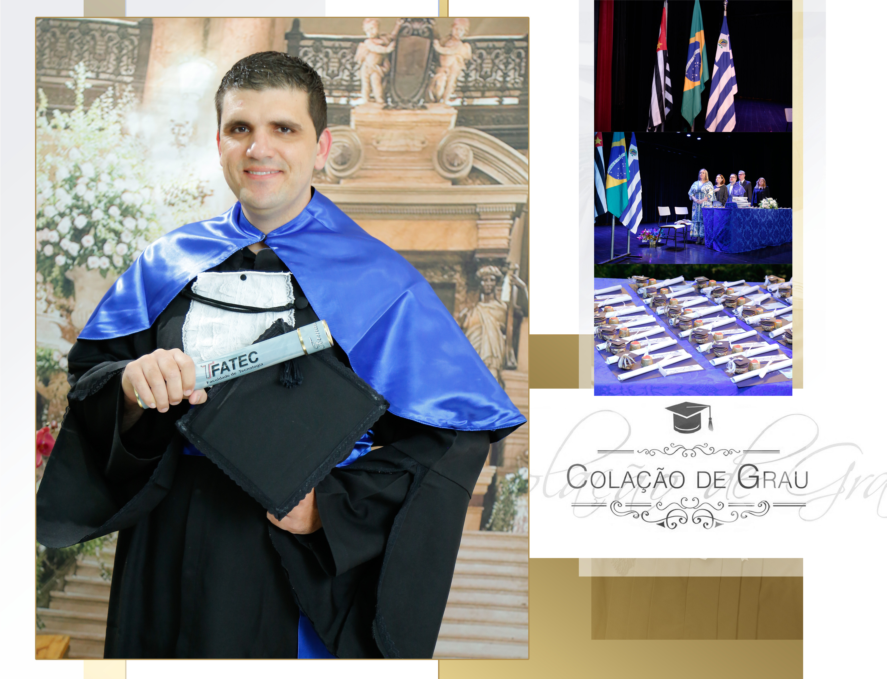
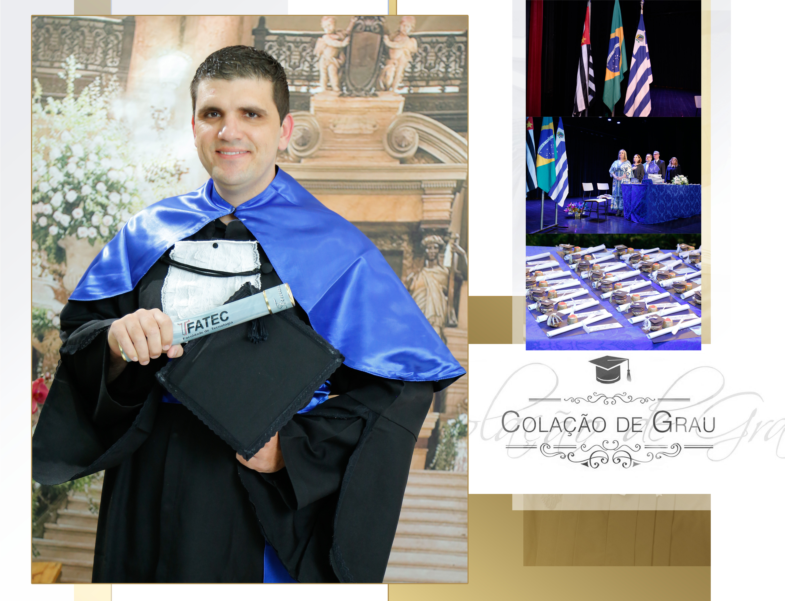

Minha História
Sou Diego Pascoal, nascido e criado em Araçatuba interior de São Paulo. Tenho 34 anos e sou casado com a Carla e ainda não tenho filhos.
Sou Formado em Serviços Jurídicos Cartorários e Notariais e recentemente também me formei em Análise e Desenvolvimento de Sistemas pela FATEC Araçatuba.
Após me formar em Análise e Desenvolvimento de Sistemas, iniciei meu Bacharelado em Engenharia da Computação pela UNIVESP - Universidade Virtual de São Paulo no mês de Julho de 2024.
Atualmente atuo como Analista de Suporte Técnico há cerca de três anos em contato direto com Analista de Sistemas e Homologadores, tendo experência em Treinamentos e atendimento ao cliente, criação de tarefas para Desenvolvimento, validação de dados de conversão, além de realizar análises e resolução de Inconsistências diversas e realização de implantação de Sistemas in loco no Cliente.
Estou em busca de ser o melhor profissional possível e mantenho sempre o máximo de respeito com todos os clientes e relacionamentos mantidos na área comercial.
 
